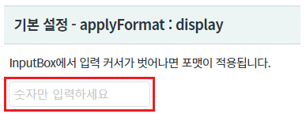
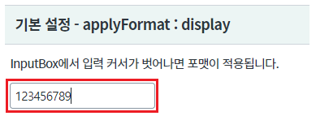
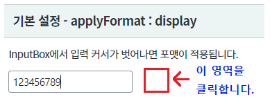
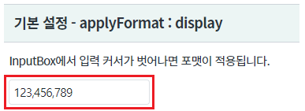
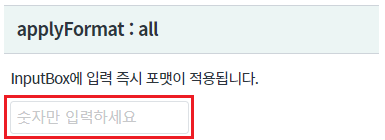
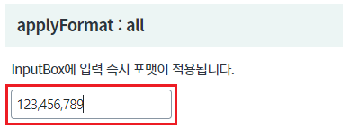
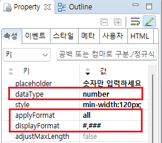
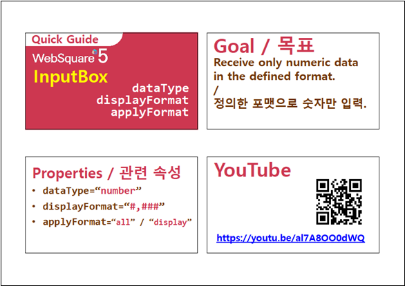

InputBox의 속성 applyFormat의 설정값 비교 예제입니다. InputBox의 속성을 아래와 같이 설정하면 사용자가 입력한 숫자형 데이터가 3자리 마다 ,가 포함됩니다. - dataType : number 또는 bigDecimal - displayFormat : #,### 속성 applyFormat에 지정한 값에 따라 포맷 적용의 시점이 달라집니다.
입력 커서가 컴포넌트를 벗어나면 포맷이 적용 - applyFormat : display
입력 즉시 포맷이 적용 - applyFormat : all
영역 [기본 설정 - applyFormat : display]의 Input에 "123456789"를 입력합니다.
[브라우저(Chrome) 실행 예시]

포맷이 입력 중에는 적용이 되지 않는 것을 확인 할 수 있습니다.
[브라우저(Chrome) 실행 예시]

[브라우저(Chrome) 실행 예시]

포맷이 적용되는 것을 확인합니다.
[브라우저(Chrome) 실행 예시]

영역 [applyFormat : all]의 Input에 "123456789"를 입력합니다.
[브라우저(Chrome) 실행 예시]

포맷이 입력 즉시 적용되는 것을 확인 할 수 있습니다.
[브라우저(Chrome) 실행 예시]

STEP1. Input의 속성을 정의합니다.
[필수] dataType="number" //입력 데이터 타입. number 또는 bigDecimal로 설정합니다.
[필수] displayFormat="#,###" //입력 데이터에 적용할 포맷을 지정합니다.
[필수] applyFormat="all" //[default:display, all] formated 된 value의 값의 적용 범위로 all의 경우, value와 display된 값이 동일하게 적용되며 입력하는 동안에 format이 적용된다.
그림 1.웹스퀘어5 SP5 스튜디오의 Property View(속성창) 예시

[소스 코드 예시]
<!-- input 의 소스 본문 예시 --> <xf:input dataType="number" displayFormat="#,###" applyFormat="all"> </xf:input>
dataType
displayFormat
applyFormat
[웹스퀘어5 SP5 개발 가이드] InputBox
링크 : https://docs1.inswave.com/sp5_user_guide/8df43d1f59fab704#3f78e914466d2d7a
[웹스퀘어5 SP5 개발 가이드] InputBox - 포맷 적용 시점 (applyFormat)
링크 : https://docs1.inswave.com/sp5_user_guide/8df43d1f59fab704#ee6378a6e43b4898
InputBox - 포맷 적용 시점 (applyFormat)
링크 : https://youtu.be/al7A8OO0dWQ
